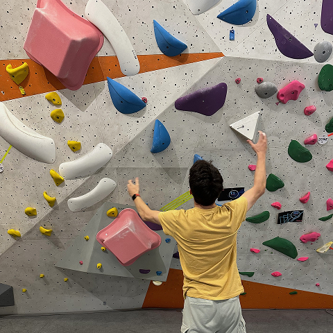

Centre d'intérêt
Escalade
Passionné d'escalade.


Photographie
saisir description
Bricolage
saisir description
Radio
saisir description
Passionné par les métiers de la radio et par l’informatique, je suis motivé par l’envie d’apprendre de nouvelles compétences pour atteindre de nouveaux objectifs.
Apprentissage sur la console AXIA Fusion et le logiciel A2i
Réalisation d'émissions radios
(enchaînements, speak, rédaction de speaks...)
Histoire de la musique et Histoire de la
radio.
Cours de promo marketing
Etude d'informatique et de réseaux. Cybersécurité Informatique Electronique et Réseaux (CIEL).
Option
IR : Informatique et Réseaux
Baccalauréat sciences et technologies de l'industrie et du développement durable (STI2D).
Option
:
Système d’information numérique
Diplôme national du brevet des collèges
Passionné d'escalade.
saisir description
saisir description
saisir description